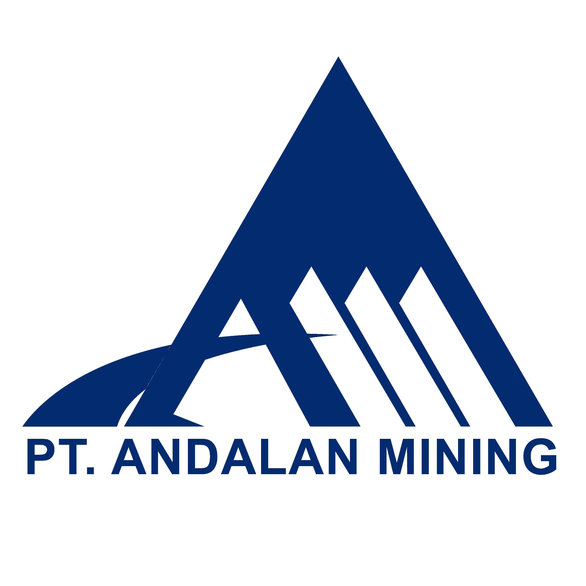

PT. Andalan Mining
Pre Start Check & Dokumen Safety
A. Kendaraan & Alat Berat
1. LT (Light Truck)
- Dump truck
- Fuel Tank
- Head Tronton
- Dump Hino
- Water Hino
- Lube truck
- Manhoul
- Crane Truck
- Truck PS
- Water Tank
- Trailer
2. HE (Heavy Equipment)
- Compact
- Dozer
- Excavator
- Grader
3. Elef
4. Light Vehicle (LV)
B. Peralatan
1. Fabrikasi
- a. Mesin las & memotong
- b. Gerinda
- c. Tangga portable
- d. Harness
- e. Fire extinguisher
- f. Workshop
- g. -
2. HDPE
- a. Base frame
- b. Cutter
- c. Hot Plate
- d. Hydraulic pump
- e. Chain saw
- f. Genset
- g. Extention cabel
- h. Rantai
- i. Chain block
- j. Stan pengangkat
- k. Tabung pemadam
- l. Harness
- m. Jaket pelampung
3. Dewatering
- a. Jaket pelampung
- b. Sump dan pompa
- c. Pembersihan bunding
- d. Perahu kecil
- e. -
4. Maintenance
- a. Workshop
- b. PLH
- c. Toolbox
- d. Dongkrak
5. Cek Lokasi
C. SOP
1. All Employe
2. Project
- Geo Membrane
- Land Clearing
- Pengoperasian Fuel Truck
- Pengoperasian Grader
- Pengoperasian Vibro / Compact
- Pengoperasian Lowboy & Trailer
- Pengoperasian Dozer (D85 ESS)
- Pengoperasian Excavator
- Pengoperasian DT
- Pengoperasian Man Haul
- Refueling
- Loading, Hauling, Dumping
- Dumping ke lumpur dan air / High Dump
- Cut & Fill
- Cutting Trees
- Menarik Kendaraan / Towing
3. HDPE
- HDPE (Poly Pipe)
- HDPE Spiral
- Pengoperasian Chain Block
- Pengoperasian Genset
4. Fabrikasi
- Pengoperasian Mesin Las / Welding Machine
- Pengoperasian Compresor
- Pengelasan dengan Oxy & Axetellyn
- Pengoperasian Truck Crane
- Pengoperasian Mesin Las Inverter
- Pengoperasian Gerinda Duduk
- Pengoperasian Bor Magnet
- Jumper Accu / Battery
5. Mekanik
- Minor Maintenance
- PM Check
- Jumper Accu / Battery
- Pengoperasian Chain Block
- Pengoperasian Genset
- Pengoperasian Torch Wrench
- Menarik Kendaraan / Towing
6. Civil
- Pengoperasian Bor Tangan / Hand Drill
- Pengoperasian Gerinda Potong
- Pengoperasian Hand Compactor
- Pengoperasian Molen
- Pengoperasian Gerinda / Hand Grinding
- Pengoperasian Circular Saw
7. Dewatering
- Pengoperasian Pompa dan Pendukungnya
- Pengoperasian Mini Bus
8. Survey
9. LV Holder
- Pengoperasian Light Vehicle (LV)
D. Contoh JSA
(Contoh JSA ditampilkan di sini)
E. PTO (Plan Task Observation)
(Isi PTO di sini)